团队职责与专业分工
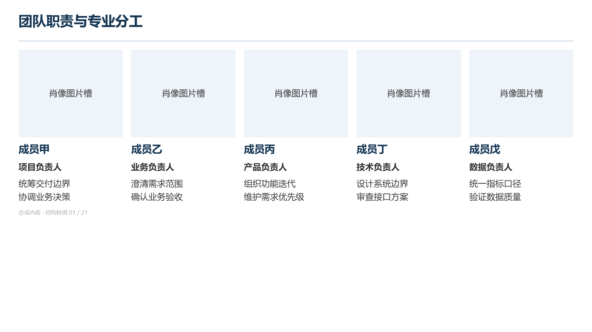
等宽5列图文栅格
适用：3–5人/角色简介，同行比较
限制：头像为可替换图片槽；示例用明确肖像占位，不复制客户照片。
场景与方法 · 作者 · 槽位原创合成内容，全局tokens，独立索引。AI选择结构和绑定内容后由正常computed入口计算。不是全网模板全集，也不自动出现在library query。

等宽5列图文栅格
适用：3–5人/角色简介，同行比较
限制：头像为可替换图片槽；示例用明确肖像占位，不复制客户照片。
场景与方法 · 作者 · 槽位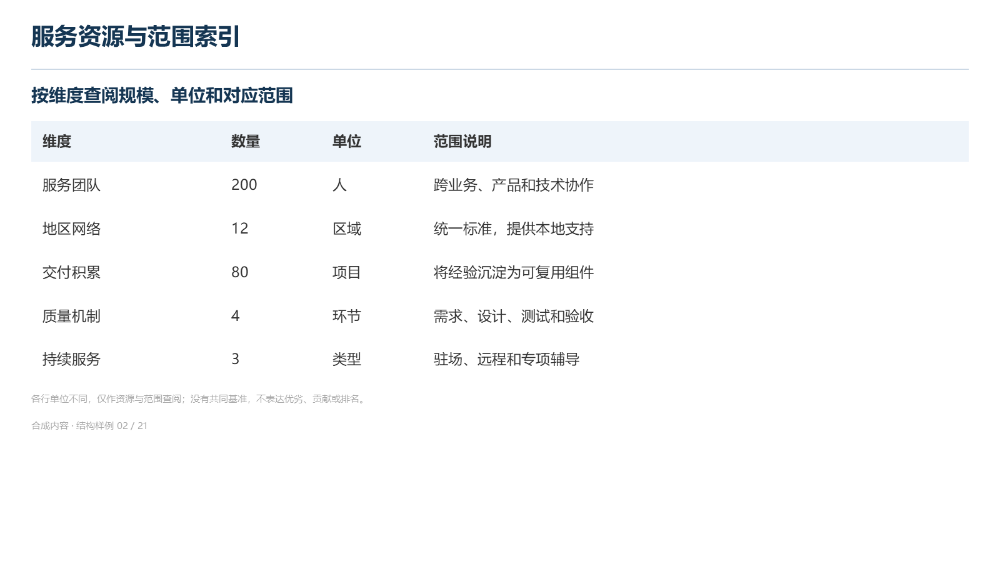
通栏四列查阅索引：维度/数量/单位/范围说明
适用：资源、服务范围、异单位指标的精确查阅和核对
限制：这是呈现精确记录的索引表。保留原五个合成值和单位；不把查阅记录包装成量级比较或能力结论。
场景与方法 · 作者 · 槽位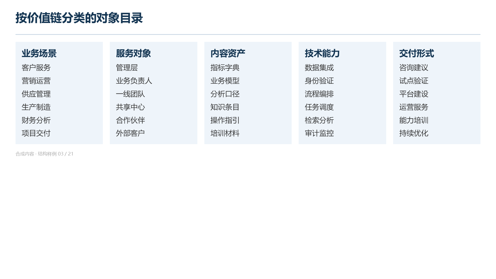
5列独立清单
适用：客户/功能/对象分类目录
限制：保留列分组；超长名称实际换行，不保证原页22项仍可容纳。
场景与方法 · 作者 · 槽位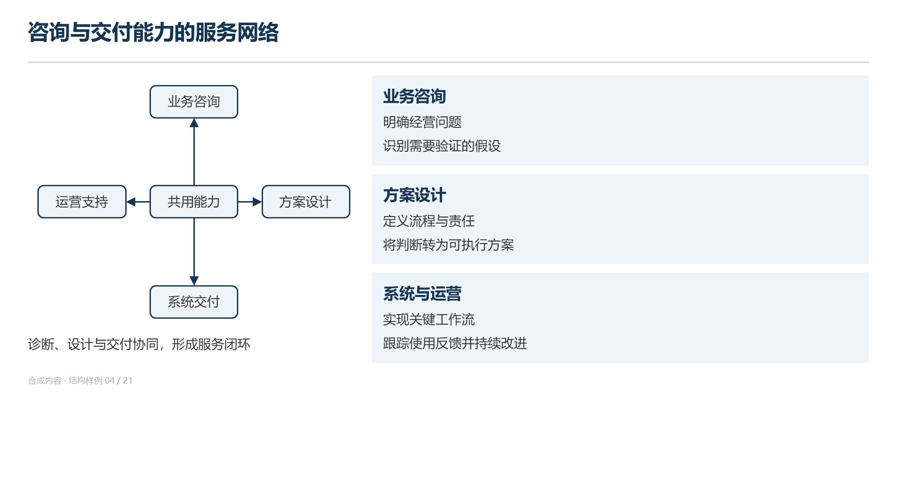
左关系图+右分组说明（2:3）
适用：服务体系、双能力协同、能力介绍
限制：原脑形插图/暗色图片不重画；参数化径向节点替代视觉隐喻，非轮廓保真。
场景与方法 · 作者 · 槽位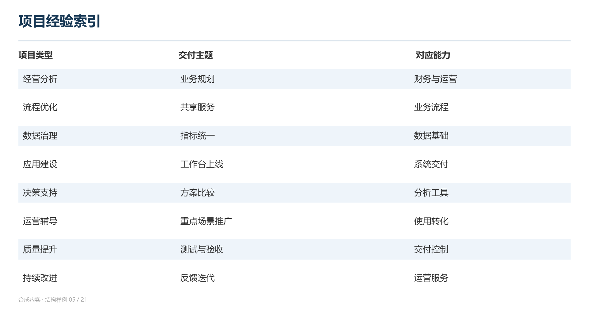
通栏语义索引行+稳定列宽
适用：查阅并核对项目、主题与能力的精确二维对应关系
限制：索引表适用于精确查找对应；表格在核对任务中不属于低优先级。
场景与方法 · 作者 · 槽位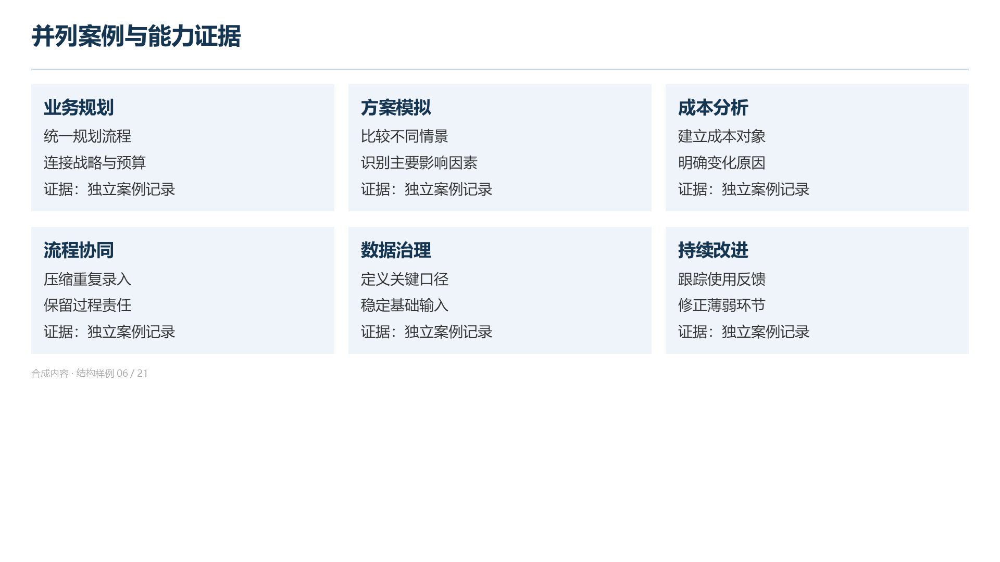
3列×2行案例卡
适用：6个可并行阅读案例
限制：统一浅底和语义强调，去原深色交错品牌块。
场景与方法 · 作者 · 槽位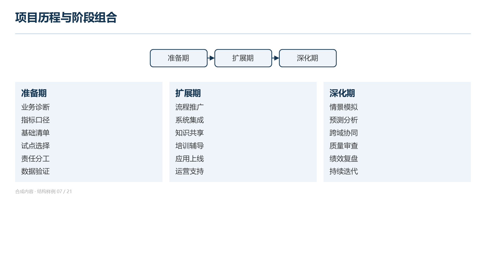
通栏时间轴+3阶段项目栅格
适用：项目组合历程、能力积累
限制：原蜂窝多边形错位堆叠改成计算栅格；保留时间轴与阶段分组，非蜂窝轮廓重建。
场景与方法 · 作者 · 槽位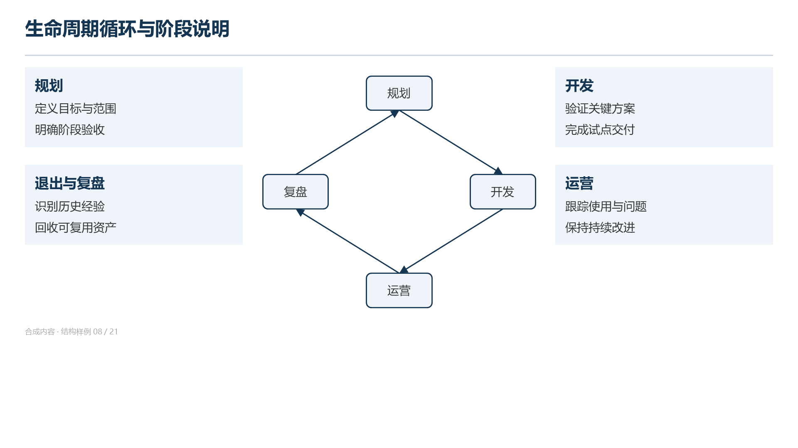
两侧解释+中央循环（3:4:3）
适用：产品生命周期、持续改进闭环
限制：现有cycle为节点+直连箭头，不生成原异形弯曲箭头；关系可编辑。
场景与方法 · 作者 · 槽位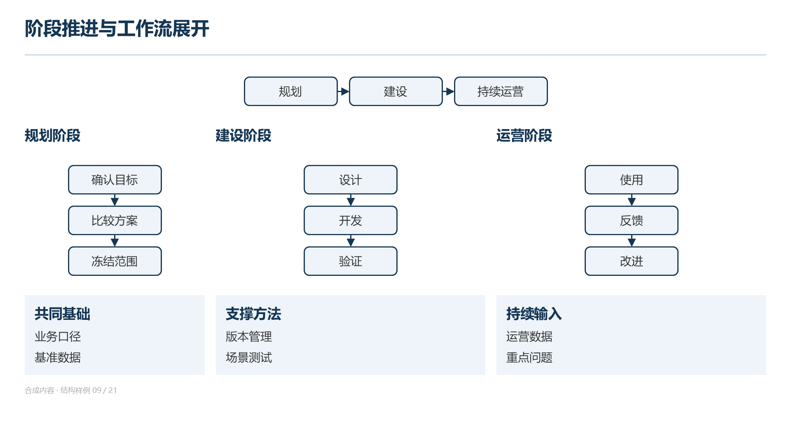
通栏顺序轴+非对称3列工作区
适用：端到端生命周期分析
限制：不复刻原所有回绕箭头；保留直线有向关系，阶段横宽按内容约束。
场景与方法 · 作者 · 槽位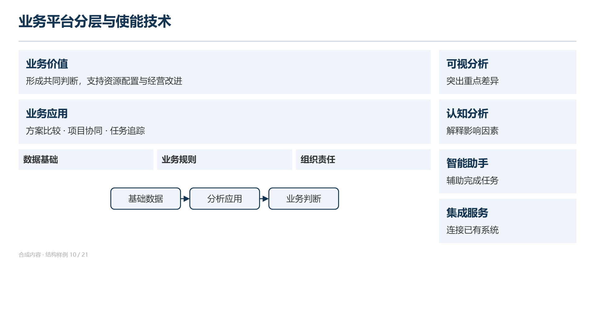
主架构3层+右说明栏（3:1）
适用：平台方案、能力架构、产品介绍
限制：屋顶/3D斜边取消；分层、包含与使能关系保留，不宣称源形状保真。
场景与方法 · 作者 · 槽位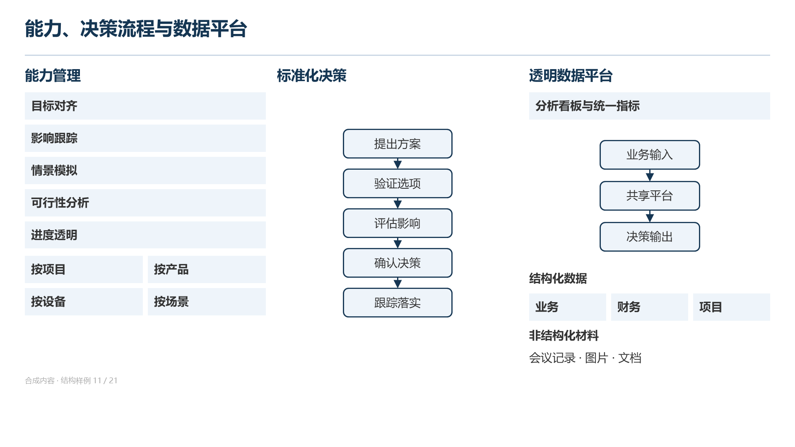
3列混合组件栅格
适用：方法体系：能力清单+过程+数据支撑
限制：原九节点蛇形流程降为5步示例；输入可变但不支持任意蛇形绕线。
场景与方法 · 作者 · 槽位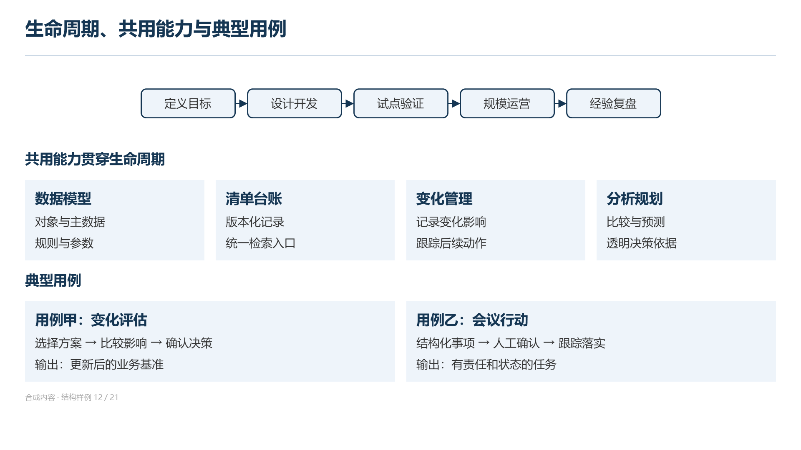
上顺序轴/中4能力/下2用例
适用：介绍平台如何支持全流程
限制：源波浪线属于装饰，替换直连阶段轴；能力贯穿各阶段而非逐列映射。
场景与方法 · 作者 · 槽位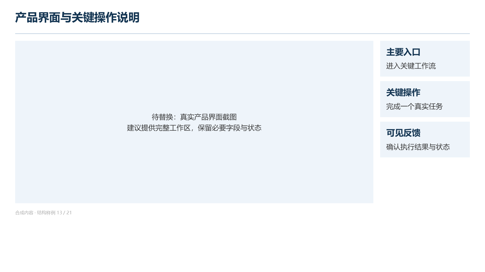
主图+窄说明栏（4:1）
适用：真实产品截图、难以原生重绘的界面
限制：样例为明确图片占位；替换真实图片后内部不可编辑，外部说明可编辑。
场景与方法 · 作者 · 槽位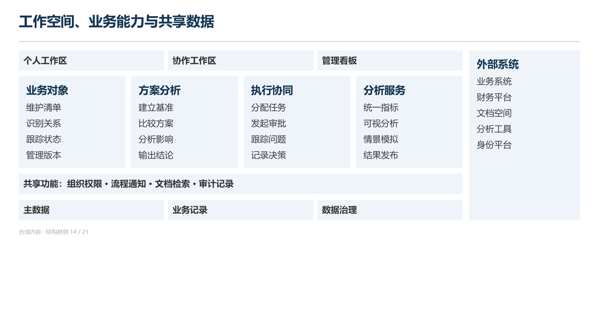
分层主区+外部系统栏（4:1）
适用：应用架构、功能范围地图
限制：源阶段配色改全局色角色；真实阶段含义须通过标签，不能仅靠颜色。
场景与方法 · 作者 · 槽位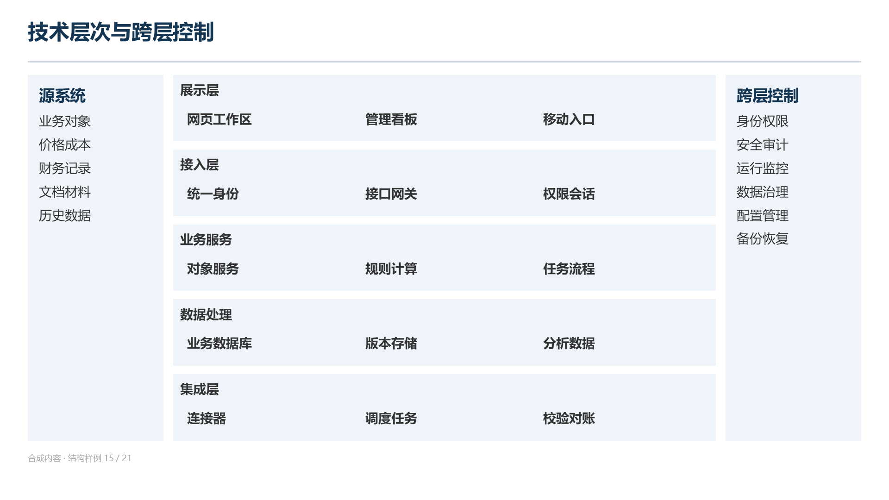
三栏：源系统/核心分层/跨层控制（1:4:1）
适用：技术方案、系统边界、接口说明
限制：去除品牌、装饰副标题；实际方向可配置，不能推断原PDF未提供接口协议。
场景与方法 · 作者 · 槽位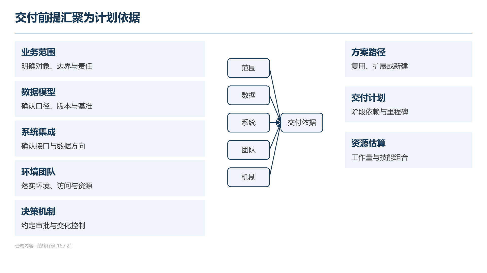
左条件/中汇聚图/右输出（3:2:2）
适用：实施准备、决策输入、就绪说明
限制：现有layered直线汇聚替代源曲线；输入条件和输出之间关系保留。
场景与方法 · 作者 · 槽位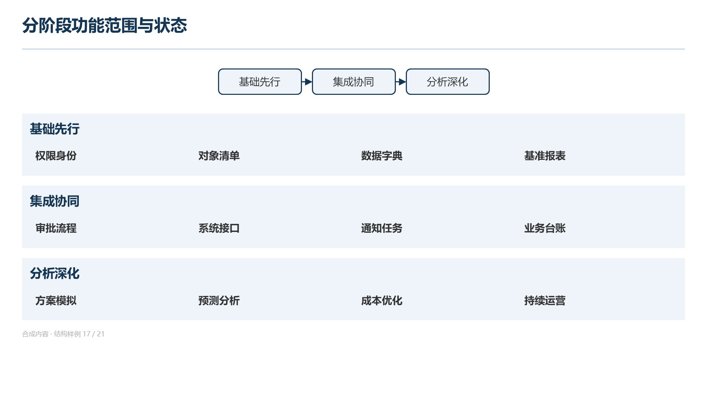
阶段纵向分区+内部模块栅格
适用：分期交付、范围清单、阶段边界
限制：原24行表格改阶段模块组，保留阶段与状态；详细接口清单可做附录。
场景与方法 · 作者 · 槽位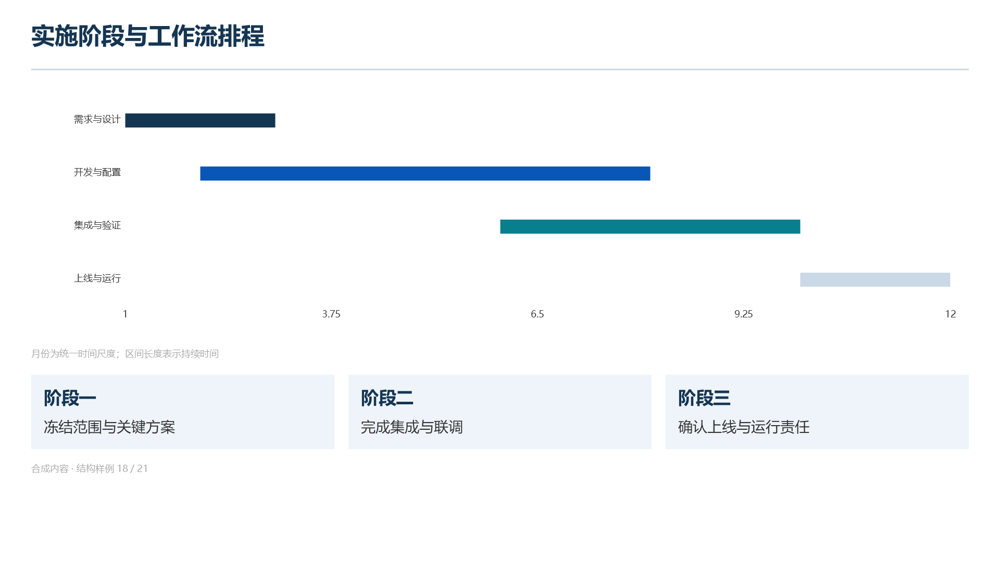
通栏甘特+底部阶段交付
适用：项目计划、试点与推广排程
限制：现成Priestley时间区间图；数字月份统一映射，原图复杂多段需拆多行。
场景与方法 · 作者 · 槽位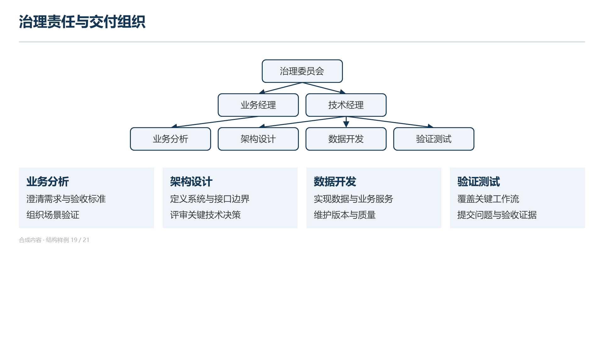
上层级图+下4岗位说明
适用：项目治理、团队汇报结构
限制：树状单父层级；不支持多头汇报冒充tree，需layered替换并检查交叉。
场景与方法 · 作者 · 槽位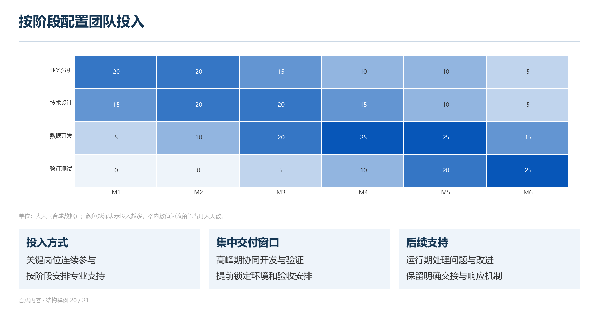
上资源热力图+下投入/运维说明
适用：解释角色×月份投入分布，识别集中时段和岗位差异
限制：示例数值单位为人天，颜色表示多少，不是利用率。格内带值仅辅助读图，不替代核对明细表。
场景与方法 · 作者 · 槽位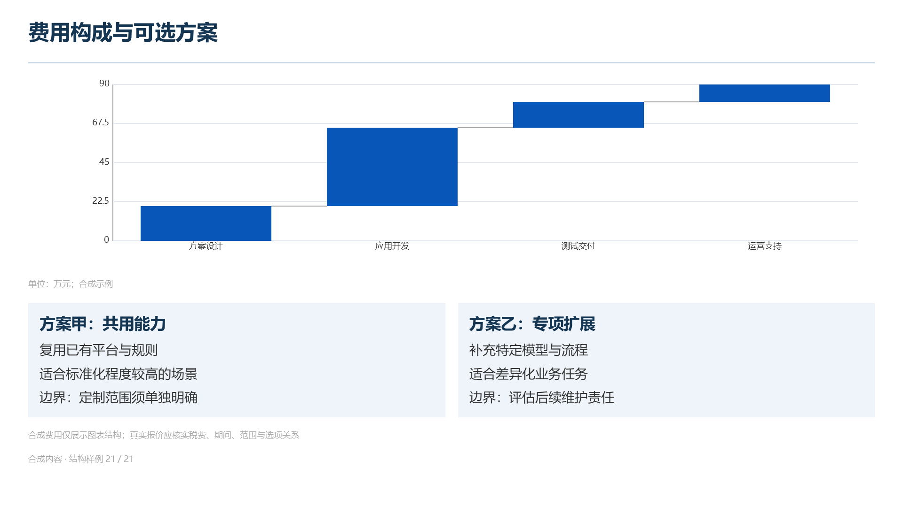
费用构成图+两方案比较
适用：预算构成、报价概要、采购比较
限制：原价格表内化为图表+条款；精确角色单价/税则保留外部清单，不擅自省略。
场景与方法 · 作者 · 槽位